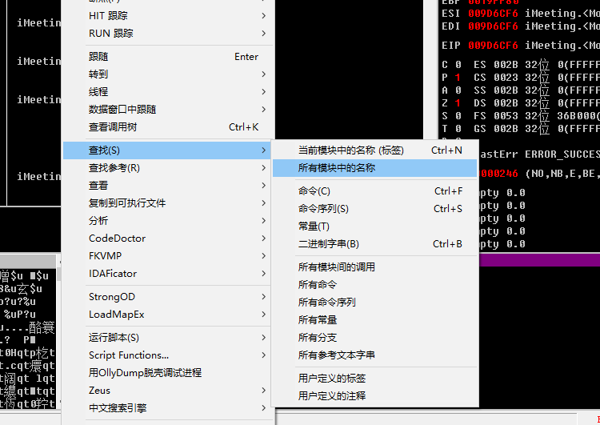
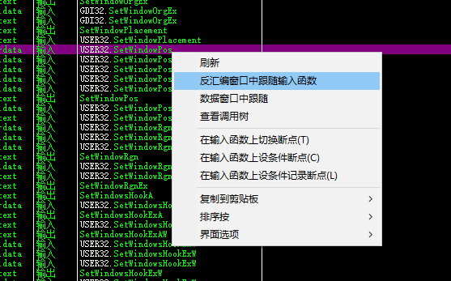
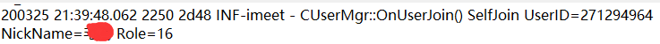
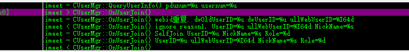
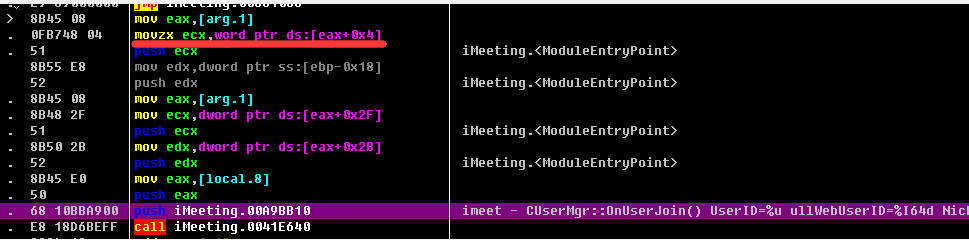
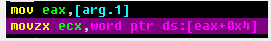
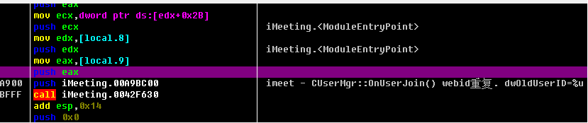
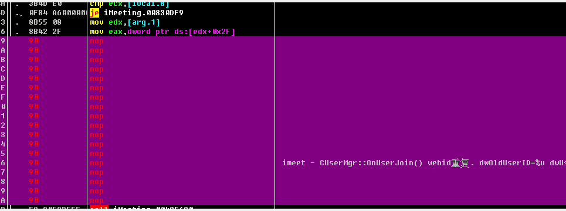
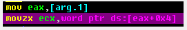

无限宝创造了世界…..
今年寒假的格局，是与往年不同的，林林总总多了些网课，有人自然欣喜，但对于我这种自制力极差的人来说….还是整点活吧？
开端
软件研究的开端，是刚开始上网课时，朋友微信上和我说无限宝这个软件的锁屏贼恶心，能不能把锁屏强制关掉，So,研究开始了。
首先想到的方法-HOOK
Hook，也就是钩子，无限宝程序一定是用什么API然后循环调用，使得窗口置顶的吧，如果能在无限宝调用API时后拦截，并阻止它调用，应该就可以了。
经过相关资料查阅，大概摸清楚了无限宝使用的API
SetWindowPos(hwnd,i,x,y,cx,cy,flag);
//这个函数可以让无限宝窗口置顶
SetForeWindow(hwnd);
//这个函数用来设置前景激活窗口
SetActiveWindow(hwnd);
//这个函数用来设置激活窗口
//无限宝程序通过循环调用这三个函数来达到让无限宝窗口一直置顶锁屏的目的
弄清楚具体使用的API之后，就直接上HOOK
HOOK需要2个VS工程
-
DLL工程
Dll是实现HOOK转发的主体，这里使用C++，和微软官方提供的库
Detours
向VS工程里面引入 detours.h 并且在头文件上加入 detours.lib 的编译链接。
在程序开头新建一个变量WINAPI的指针 OldSetWindowPos
并将 SetWindowPos 的地址赋值到 OldSetWindowPos
static BOOL (WINAPI* OldSetWindowPos)(HWND hwnd,HWND inter,int x,int y, int cx,int cy ,UINT flag) = SetWindowPos;
然后新建一个函数 MySetWindowPos
BOOL WINAPI MySetWindowPos(HWND hwnd, HWND inter, int x, int y, int cx, int cy, UINT flag)
{
if (WXBck == NULL) {
if (FindWindowA(NULL, "无限宝互动平台 V15.0") != 0) {
WXBck = FindWindowA(NULL, "无限宝互动平台 V15.0");
if (hwnd == WXBck) {
return 1;//如果是无限宝窗口就直接返回，不进行任何操作
}
}
}
else
{
if (hwnd == WXBck) {
return 1;//如果是无限宝窗口就直接返回，不进行任何操作
}
}
return OldSetWindowPos(hwnd,inter,x,y,cx,cy,flag);
//如果是其他窗口就调用原来的函数
}
之后在DLL的入口点安装HOOK，将OldSetWindowPos转发到我们自己写的MySetWindowPos
DetourTransactionBegin();
//更新线程信息
DetourUpdateThread(GetCurrentThread());
//将拦截的函数附加到原函数的地址上,这里可以拦截多个函数。
DetourAttach(&(PVOID&)OldSetWindowPos, MySetWindowPos);
程序结束时要关闭HOOK（这里其实要不要都无所谓）
//将拦截的函数从原函数的地址上解除，这里可以解除多个函数。
DetourDetach(&(PVOID&)OldSetWindowPos, MySetWindowPos);
-
DLL注入器
DLL注入器没什么好说的，网上有许多源码，这里用C#将DLL工程编译出来的DLL注入到iMeeting.exe就行了
其次发现的方法-修改启动参数
这个方法是看到B站上 凌莞 的视频发现的
无限宝启动时需要一系列参数，否则会提示 “网页参数错误”
要想修改这些参数，可以用自己写的程序，放在无限宝的目录下改名iMeeting.exe，然后将原来的程序命名为iMeeting2.exe,这样无限宝启动时会先启动我们的程序，然后我们的程序截获启动参数，修改之后，再用这些启动参数启动真正的无限宝程序。
也可以有另一种方法。
发现无限宝程序下面，有一个缓存文件，缓存了无限宝启动所需的所有参数。
缓存目录：C:\Users\用户名\AppData\Local\Winupon\Vizpower\tmp\loginmeetinglist.ini
对缓存文件的文本进行处理之后，就可以转化为相应的参数
这一部分可以看 WXBThirdLogin
第三种方法 OD暴力破解
OD的方法比较暴力，原理就是直接OD反编译无限宝的iMeeting.exe,把调用 窗口置顶的相关函数全部删除。
OD直接打开

右键直接查找所有模块

找到之后查找所有引用，把引用的地方全部Nop掉就OK了。
未曾设想的道路
既然启动参数是登陆时候获取的，那能不能拦截登陆时候返回的封包，修改成我们需要的呢？理论上是可以的
但是无限宝登陆程序不走Fiddler代理，就没办法使用Fiddler.core库来拦截修改封包
应该也有其他的方法来拦截网络封包，比如使用DLL注入拦截WSARECV函数，或者使用网卡级代理过滤器，也应该可以，更可以直接HOST重定向到我们的虚拟代理服务器。这些都是可行的
其他的修改-OD修改无限宝权限
这里直接贴记录
Micks 2020/03/25 21:46:16
嗯好
Micks 2020/03/25 21:46:17
我说一下
Micks 2020/03/25 21:46:39
就是根据日志文件，发现输出日志时 会输出角色的数据
Micks 2020/03/25 21:46:48

Micks 2020/03/25 21:46:54
有了具体的文本就行了
Micks 2020/03/25 21:46:57
直接上OD
Micks 2020/03/25 21:47:02

Micks 2020/03/25 21:47:08
查找字符串查找这一段
Micks 2020/03/25 21:47:19

Micks 2020/03/25 21:47:21
找到之后
Micks 2020/03/25 21:47:43

Micks 2020/03/25 21:48:06
发现输出的地方有4个参数，最后一个参数 也就是我们的角色类型role对应的应该是第一个push
Micks 2020/03/25 21:48:21

Micks 2020/03/25 21:48:47
这里就是将role赋值到第四个参数
Micks 2020/03/25 21:49:11
就明确role 其实 是 arg.1 往右移 4个单位的指针所指的值
Micks 2020/03/25 21:49:22
这时候我们想改这个值
Micks 2020/03/25 21:49:35
发现程序里面没有修改的位置了
Micks 2020/03/25 21:49:49
这时候日志就派上用场了
Micks 2020/03/25 21:50:02
往前翻 翻到一个输出日志的地方
Micks 2020/03/25 21:50:16

Micks 2020/03/25 21:50:30
反正输不输出日志对程序运行无影响
Micks 2020/03/25 21:50:34
所以直接NOP
Micks 2020/03/25 21:50:48

Micks 2020/03/25 21:51:09
这样就有大量足够的空间让我们将自己写的代码写到程序里面了
Micks 2020/03/25 21:51:34
照搬这段

Micks 2020/03/25 21:52:30
然后写汇编
mov eax,[arg.1]
mov word ptr ds:[eax+0x4],0x8
Micks 2020/03/25 21:52:39
这里的0x8就是主讲代表的role
Micks 2020/03/25 21:53:08
整个过程是很清晰的，就是OD破解的一般思路
Micks 2020/03/25 21:53:43
定位-可以直接改就直接改-不能改就自己加代码-没有空间补空间
Micks 2020/03/25 21:53:55
就算我们找不到输出日志的地方来拓宽空间
Micks 2020/03/25 21:53:59
还可以用斗转星移
Micks 2020/03/25 21:54:11
在程序尾部找一段空白区域
Micks 2020/03/25 21:54:14
自己写一个函数
Micks 2020/03/25 21:54:20
将原函数转过去
Micks 2020/03/25 21:54:27
但是这里有空间就直接用了
Micks 2020/03/25 21:54:55
整个过程大概这样
Micks 2020/03/25 21:56:09
之前很久没想到是因为，完全不知道该怎么定位